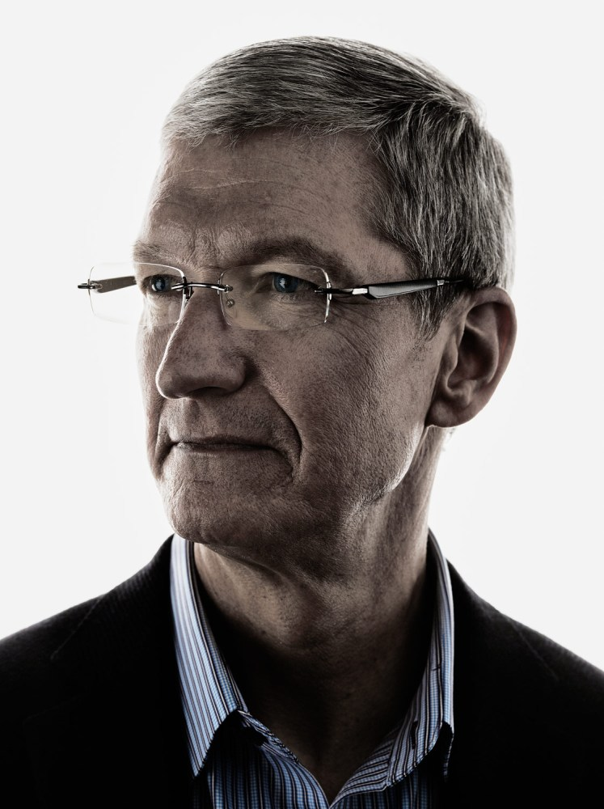

Timothy Donald Cook
Chief Executive Officer of Apple Inc.

Cook joined Apple in March 1998 as a senior vice president for worldwide operations,
and then served as the executive vice president for worldwide sales and operations. He was made the chief executive on August 24, 2011, prior to Jobs' death in October of that year. During his tenure as the chief executive, he has advocated for the political reformation of international and domestic surveillance, cybersecurity, American manufacturing, and environmental preservation. Since 2011 when he took over Apple, to 2020, Cook doubled the company's revenue and profit, and increased its market value from $348 billion to $1.9 trillion.
Timothy Donald Cook (born November 1, 1960) is an American business executive, philanthropist and engineer. Cook is the chief executive officer of Apple Inc., and previously served as the company's chief operating officer under its cofounder Steve Jobs.
Cook joined Apple in March 1998 as a senior vice president for worldwide operations, and then served as the executive vice president for worldwide sales and operations. He was made the chief executive on August 24, 2011, prior to Jobs' death in October of that year. During his tenure as the chief executive, he has advocated for the political reformation of international and domestic surveillance, cybersecurity, American manufacturing, and environmental preservation. Since 2011 when he took over Apple, to 2020, Cook doubled the company's revenue and profit, and increased its market value from $348 billion to $1.9 trillion.
In 2014, Cook became the first chief executive of a Fortune 500 company to publicly come out as gay. Cook also serves on the boards of directors of Nike, Inc., the National Football Foundation, and is a trustee of Duke University. In March 2015, he said he planned to donate his entire stock fortune to charity.
EARLY LIFE AND EDUCATION
Cook was born in Mobile, Alabama, United States. He was baptized in a Baptist church and grew up in nearby Robertsdale. His father, Donald, was a shipyard worker, and his mother, Geraldine, worked at a pharmacy.
Cook graduated from Robertsdale High School in 1978. He earned a Bachelor of Science (B.S.) in industrial engineering from Auburn University in 1982, and his Master of Business Administration (MBA) from Duke University's Fuqua School of Business in 1988.
CAREER
PRE-APPLE ERA
After graduating from Auburn University, Cook spent 12 years in IBM's personal computer business, ultimately serving as the director of North American fulfillment. It was during this time that Cook also earned his MBA from Duke University, becoming a Fuqua Scholar in 1988. Later, he served as the Chief Operating Officer of the computer reseller division of Intelligent Electronics. In 1997, he became the Vice President for Corporate Materials at Compaq for six months, but left the position after being hired by Steve Jobs.
APPLE ERA
EARLY CAREER
In 1998, Steve Jobs asked Cook to join Apple. In a commencement speech at Auburn University, Cook said he decided to join Apple after meeting Jobs:
Any purely rational consideration of cost and benefits lined up in Compaq's favor, and the people who knew me best advised me to stay at Compaq... On that day in early 1998, I listened to my intuition, not the left side of my brain or for that matter even the people who knew me best... no more than five minutes into my initial interview with Steve, I wanted to throw caution and logic to the wind and join Apple. My intuition already knew that joining Apple was a once in a lifetime opportunity to work for the creative genius and to be on the executive team that could resurrect a great American company.
His first position was Senior Vice President for worldwide operations. Cook closed factories and warehouses, and replaced them with contract manufacturers; this resulted in a reduction of the company's inventory from months to days. Predicting its importance, his group had invested in long-term deals such as advance investment in flash memory since 2005. This guaranteed a stable supply of what became the iPod Nano, then iPhone and iPad.[citation needed] Competitors at Hewlett-Packard described their canceled HP TouchPad tablet computer and later said that it was made from "cast-off, reject iPad parts". Cook's actions were recognized for keeping costs under control and, combined with the rest of the company, generated huge profits.
Cook giving the keynote at the 2012 World Wide Developers Conference.
In January 2007, Cook was promoted to lead operations and served as chief executive in 2009, while Jobs was away on a leave of absence for health related issues. In January 2011, Apple's board of directors approved a third medical leave of absence requested by Jobs. During that time, Cook was responsible for most of Apple's day-to-day operations, while Jobs made most major decisions.
APPLE CHIEF EXECUTIVE (2011–PRESENT)
Apple chief executive (2011–present)
After Jobs resigned as CEO and became chairman of the board, Cook was named the new chief executive officer of Apple Inc. on August 24, 2011. Six weeks later, on October 5, 2011, Jobs died due to complications from pancreatic cancer. Forbes contributor Robin Ferracone wrote in September 2011: "Jobs and Cook proceeded to forge a strong partnership, and rescued the company from its death spiral, which took it from $11 billion in revenue in 1995 down to less than $6 billion in 1998 ... Under their leadership, the company went from its nadir to a remarkable $100 billion today". In April 2012, Time included Cook on its annual "100 Most Influential People in the World" list.
On October 29, 2012, Cook made major changes to the company's executive team. Scott Forstall resigned as senior vice president of iOS, and became an advisor to Cook until he eventually departed from the company in 2013. John Browett, who was Senior VP of retail, was dismissed six months after he commenced at Apple, when he received 100,000 shares worth US$60 million. Forstall's duties were divided among four other Apple executives: design SVP Jony Ive assumed leadership of Apple's human interface team; Craig Federighi became the new head of iOS software engineering; services chief Eddy Cue became responsible for Maps and Siri; and Bob Mansfield, previously SVP of hardware engineering, became the head of a new technology group.
Cook with Indian Prime Minister Narendra Modi in New Delhi
Cook's executive changes occurred after the third quarter of the fiscal year, when revenues and profits grew less than predicted. One commentator said that Forstall was forced to step down, as Cook "decided to lance the boil as internal politics and dissent reached a key pitch". Since becoming CEO, Cook focused upon building a harmonious culture that meant "weeding out people with disagreeable personalities—people Jobs tolerated and even held close, like Forstall"; although, another journalist said that "Apple's ability to innovate came from tension and disagreement." On February 28, 2014, Cook made headlines when he challenged shareholders to "get out of the stock" if they didn't share the company's views on sustainability and climate change. In May 2016, Cook traveled to China to meet with government officials there after the closure of Apple's online iTunes Store and Apple Books store by the Chinese government.
Cook with Chongqing Mayor Huang in Apple Store Jiefangbei, China, August 17, 2016
In 2016, some analysts compared Cook to former Microsoft CEO Steve Ballmer, claiming that innovation had died down since he replaced Jobs, similar to when Ballmer became Microsoft CEO in 2000. In December 2017, Cook was a speaker at the World Internet Conference in China.
Cook was appointed chairman of the advisory board for Tsinghua University's economics school in October 2019. The length of his term will be 3 years.
Rep. Tom Malinowski, Alexandria Ocasio-Cortez and several other lawmakers criticized Cook over Apple's decision to remove an app used by pro-democracy protesters in Hong Kong from its App Store. They accused Apple of censorship and co-signed a letter to Cook that read, "Apple’s decisions last week to accommodate the Chinese government by taking down HKMaps is deeply concerning. We urge you in the strongest terms to reverse course, to demonstrate that Apple puts values above market access, and to stand with the brave men and women fighting for basic rights and dignity in Hong Kong." Cook explained in an internal letter why the company removed Hong Kong mapping app used by protesters to coordinate movements.
TO GET MORE INFORMATION PLS CLICK THIS LINK: https://www.biography.com/business-figure/tim-cook
Article About Tim Cook And His Company
Apple Is Producing 1 Million Face Shields a Week for Health Workers
Apple CEO Tim Cook has confirmed that his company intends to start shipping one million face shields to health workers every week starting this week.
As The Verge reports, Tim Cook took to Twitter yesterday to explain how Apple has managed to source over 20 million more face masks through its supply chain, helping to honor a promise Cook had made previously. Rather than just hand them out to anyone who asks, Cook says he is working with governments to ensure "these are donated to places of greatest need."
While sourcing millions of face masks is great, Apple is doing something better by deciding to manufacture face shields using its own resources. Cook brought together "product designers, engineering, operations, packaging teams and our suppliers to design, produce and ship face shields for health workers." There's few companies that can match Apple when it comes to taking a product design from conception to delivery, so the end result of this collaboration is both impressive and unsurprising.
The face shield Apple has produced is fully adjustable to suit every head and can be flat-packed and shipped in boxes of 100. Upon opening the box, each shield can be assembled in under two minutes, offering health workers access to the protection they need quickly in hospitals around the world. The new shields have already been shipped to the Kaiser hospital facilities in Santa Clara Valley, and now Apple intends to ship over one million every week.
Just like with the face masks, Apple is keen to ensure the face shields go where they are needed most. For now, shipping is limited to the U.S., but there's plans to ship them to other countries as soon as possible.
TO GET MORE INFORMATION PLS CLICK THIS LINK: https://www.entrepreneur.com/article/348792